This mobile app concept helps golfers schedule affordable tee times that fit their busy lifestyles.
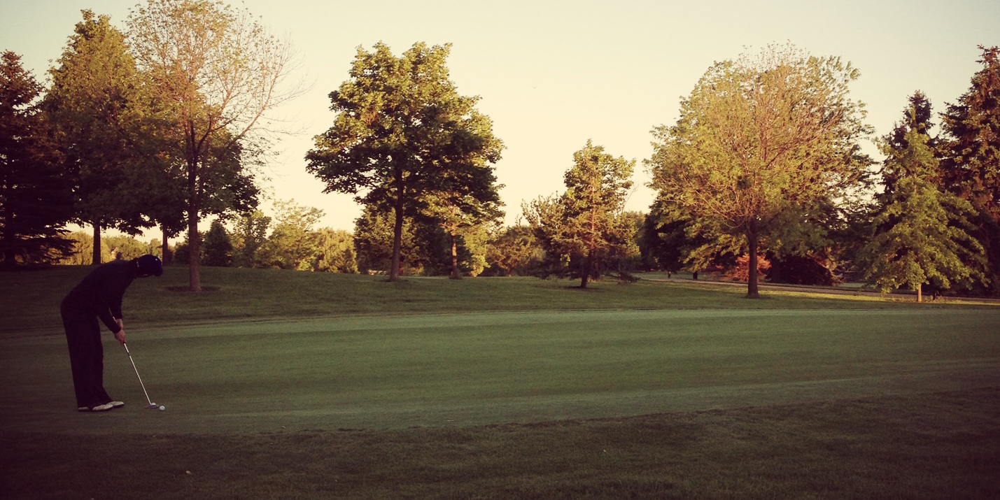
The need was birthed out of a personal desire to streamline the booking process for setting up a tee time. It is shown in the context of a local golf network, DivineBackNine. I set the creative direction in the areas of user experience, visual design, and copywriting. Iterations came by watching users walk through an image-based prototype and discussing their thought and expectation pattern. It was important that the written tone was friendly and helpful to contrast the often stuffy nature of calling or walking into a pro shop.
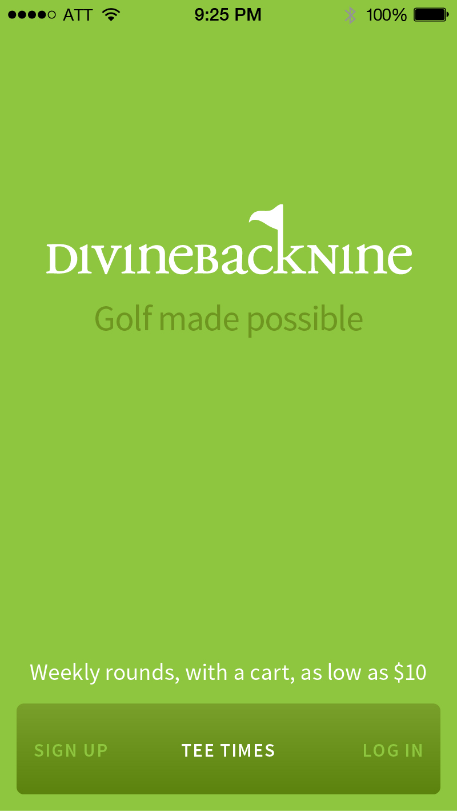
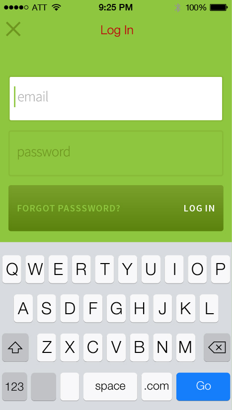
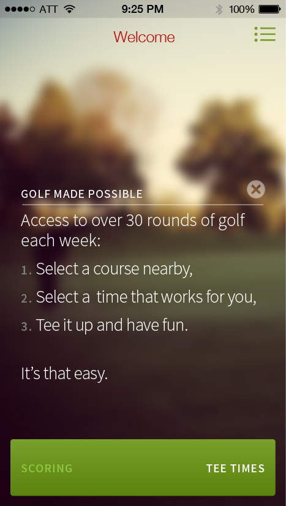
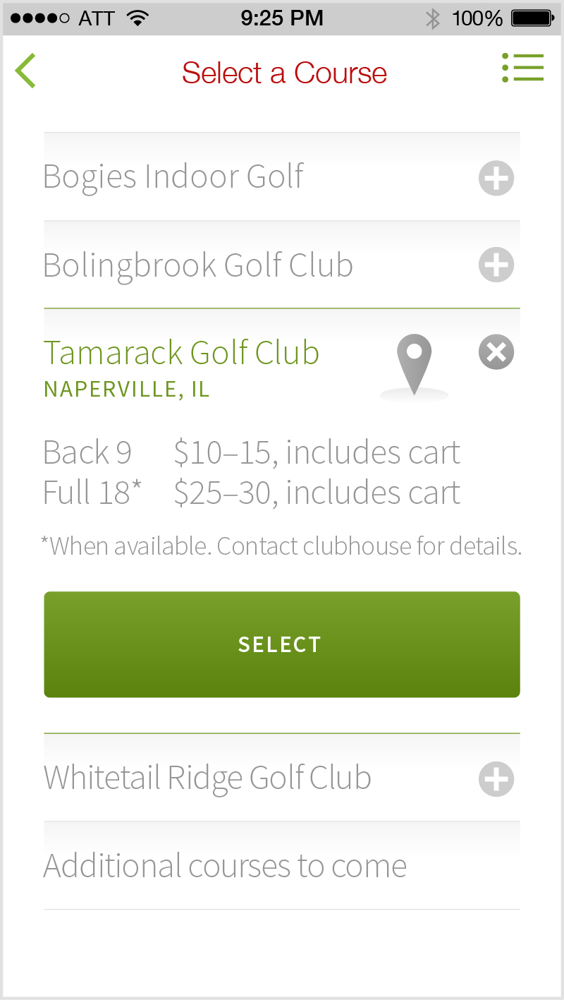
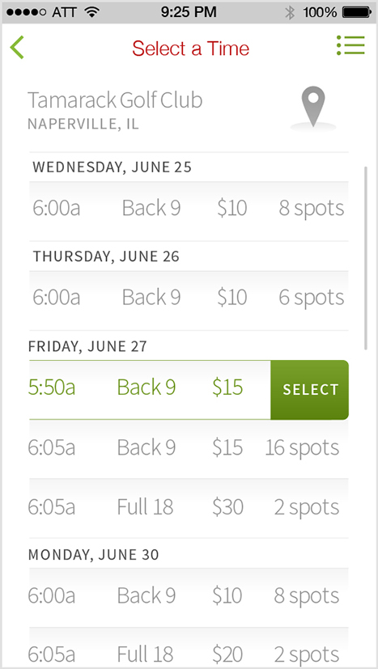
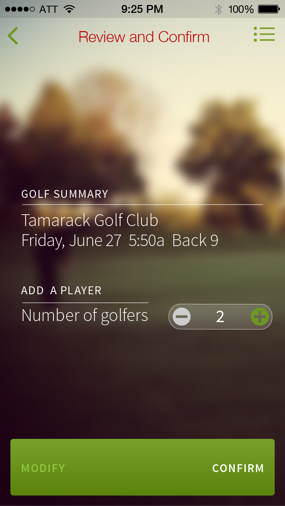
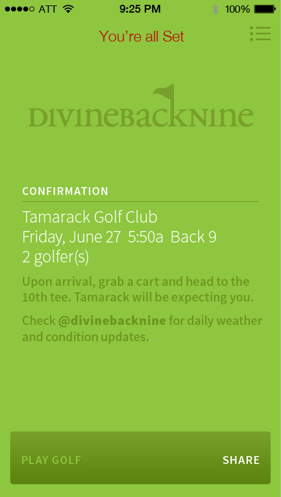
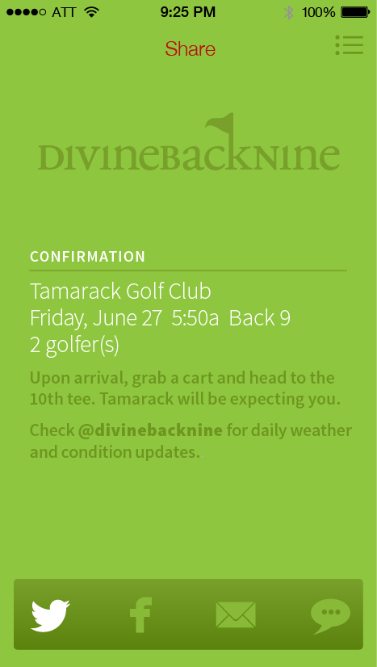
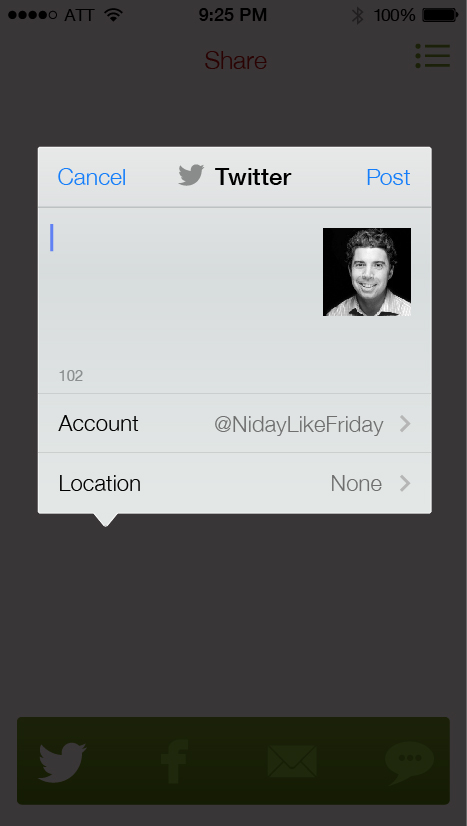
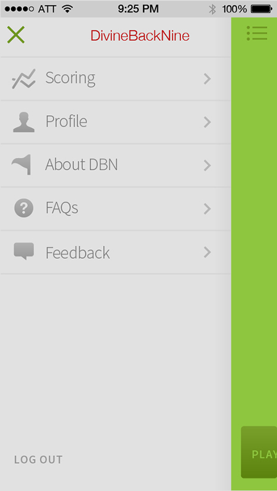
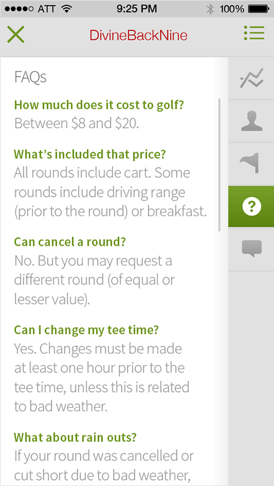
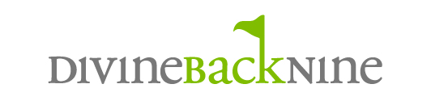
Initial visual design and sketches. The early (and continuous) challenge was to establish a clear booking path that is based on either a particular golf course or a specific time slot. Testing revealed that the user was most concerned with these key variables and less focused on specifics of the course, although they wanted that information handy for reference.